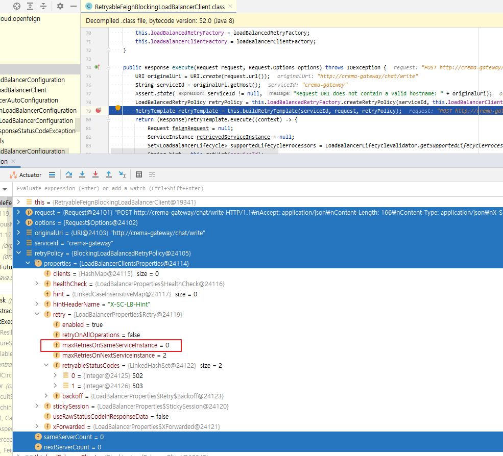
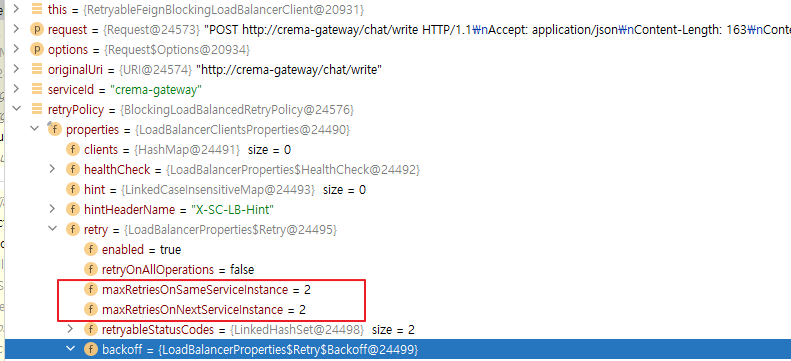
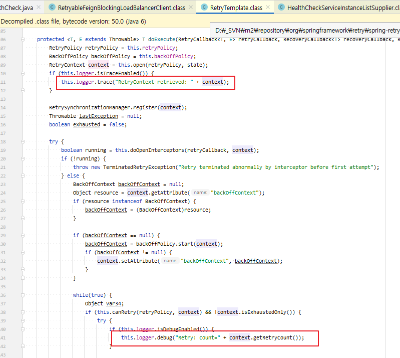
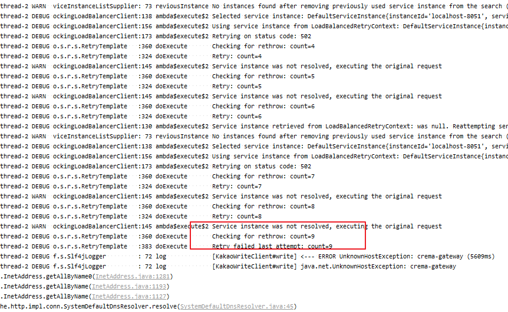

change Feign And Loadbalancer Retry
2022, Oct 01
spring cloud spring boot
change note
- retry에 대한 처리
- resilience4j가 제공하는 functional 모델 중 retry에 대해서만 처리할 계획입니다
- circuit breaker의 경우는 core application쪽에서 일임하고 있기 때문에 거기에 종속되어 동작하고 있어서, 비지니스 모델 중 일부 케이스만 retry를 커스텀할 수 있게 작업합니다.
- hystrix와 resilience4j 차이
- hystrix는 자바6 기반, resilience4j는 자바8기반
- 자바8기반이기 때문에 함수형으로 작성되었다는 것
- spring-retry, resilience4j의 retry, loadbalancer의 retry 차이
- https://velog.io/@garden6/API-재시도를-처리할수-있는-여러가지-방안들 —> 여기에 너무나도 잘 정리되어있다.
- spring-retry
- annotation을 통해서 spring aop를 호출할 수 있다.
- @EnableRetry, @Retryable을 통해 특정 exception일때 제어가 가능하며, method단위로도 설정이 가능하다
- 기본 구현 코드 : https://www.baeldung.com/spring-retry
- resilience4j
- @Retry을 사용하며, 인스턴스 기반으로 Retry
1. change dependency
<dependency>
<groupId>org.springframework.cloud</groupId>
<artifactId>spring-cloud-starter-circuitbreaker-resilience4j</artifactId>
</dependency>
2. problem
- 기존에는 Feign의 Retryer를 Bean으로 등록해두고 커스텀한 주기로 사용할 수 있게 FeignClient인터페이스에 configuration으로 등록해서 사용했었는데요.
- 이 기능이 스프링 버전업을 하게 되면서, loadbalancer에 등록한 instance들을 FeignClient로 호출할 때는 retry가 되고 있지 않은 문제가 발생했습니다.
- spring-cloud-loadbalancer에 등록한 instance들을 통신할 때, 실패시 retry이 되도록 설정하면서 정리한 내용입니다.
try1.
- 설정정보입니다. instance는 총 3대이고, 각각 2번씩 retry해야하는 설정입니다.
spring:
cloud:
loadbalancer:
enabled: true
retry:
enabled: true
maxRetriesOnSameServiceInstance: 2
maxRetriesOnNextServiceInstance: 2
retryableStatusCodes: 502, 503
- loadbalancer에 등록한 인스턴스 내부에서의 retry는 동작하고 있는데,
maxRetriesOnSameServiceInstance에 대한 동작이 안되고 있음 RetryableFeignBlockingLoadBalancerClient디버깅하면 아래처럼maxRetriesOnSameServiceInstance이 0으로 나오고 있습니다.

try2.
좀더 상세 로그를 보기 위해 레벨을 trace로 변경했습니다.
logging: level: org.springframework.cloud.openfeign.loadbalancer: trace- 디버깅하면 yml에 설정된 값으로 실행되지 않고 0으로 읽어가고 있습니다. 그래서 코드를 보니 loadbalanceProperties를 serviceId 하위로 찾고 있다는 것을 발견했습니다.
- yml을 아래처럼 instance의 serviceId 하위로 retry 설정을 추가하고 다시 테스트했습니다.
- spring.cloud.loadbalancer.clients.[SERVICE-ID].retry
spring: cloud: loadbalancer: enabled: true clients: crema-gateway: retry: enabled: true maxRetriesOnSameServiceInstance: 2 maxRetriesOnNextServiceInstance: 2 retryableStatusCodes: 502, 503 설정한 값으로 잘 읽어오고 있습니다.

try3.
하지만 설정대로 retry하지 않아서, 상세로깅을 보기위해 retry의 로깅을 설정했습니다.
logging: level: org.springframework.retry: trace로그를 보고자 하는 부분은 RetryTemplate.java의 doExecute 메서드 부분입니다.

로깅을 추가한 후 로그입니다.
- serviceId를 crema-gateway로 선언한 후, nginx서비스를 내리고 호출해 본 것인데요.
13:49:42.481 7-thread-5 DEBUG f.s.Slf4jLogger : 72 log [KakaoWriteClient#write] ---> POST http://crema-gateway/chat/write HTTP/1.1 13:49:42.481 7-thread-5 DEBUG f.s.Slf4jLogger : 72 log [KakaoWriteClient#write] Accept: application/json 13:49:42.482 7-thread-5 DEBUG f.s.Slf4jLogger : 72 log [KakaoWriteClient#write] Content-Length: 168 13:49:42.482 7-thread-5 DEBUG f.s.Slf4jLogger : 72 log [KakaoWriteClient#write] Content-Type: applicati 13:49:42.483 7-thread-5 DEBUG f.s.Slf4jLogger : 72 log [KakaoWriteClient#write] 13:49:42.483 7-thread-5 DEBUG f.s.Slf4jLogger : 72 log [KakaoWriteClient#write] ---> END HTTP (168-byte body) 13:49:42.484 7-thread-5 TRACE o.s.r.s.RetryTemplate :280 doExecute RetryContext retrieved: [RetryContext: count=0, lastException=null, exhausted=false] 13:49:42.484 7-thread-5 DEBUG o.s.r.s.RetryTemplate :324 doExecute Retry: count=0 13:49:42.484 7-thread-5 DEBUG ockingLoadBalancerClient:130 ambda$execute$2 Service instance retrieved from LoadBalancedRetryContext: was null. Reattempting service instance selection 13:49:42.485 7-thread-5 WARN c.RoundRobinLoadBalancer: 98 nstanceResponse No servers available for service: crema-gateway 13:49:42.485 7-thread-5 DEBUG ockingLoadBalancerClient:138 ambda$execute$2 Selected service instance: null 13:49:42.485 7-thread-5 WARN ockingLoadBalancerClient:145 ambda$execute$2 Service instance was not resolved, executing the original request 13:49:44.783 7-thread-5 DEBUG o.s.r.s.RetryTemplate :360 doExecute Checking for rethrow: count=1 13:49:44.783 7-thread-5 DEBUG o.s.r.s.RetryTemplate :383 doExecute Retry failed last attempt: count=1 13:49:44.783 7-thread-5 DEBUG f.s.Slf4jLogger : 72 log [KakaoWriteClient#write] <--- ERROR UnknownHostException: crema-gateway (2299ms) 13:49:44.784 7-thread-5 DEBUG f.s.Slf4jLogger : 72 log [KakaoWriteClient#write] java.net.UnknownHostException: crema-gateway at java.net.Inet6AddressImpl.lookupAllHostAddr(Native Method) at java.net.InetAddress$2.lookupAllHostAddr(InetAddress.java:929) at java.net.InetAddress.getAddressesFromNameService(InetAddress.java:1324) at java.net.InetAddress.getAllByName0(InetAddress.java:1277) at java.net.InetAddress.getAllByName(InetAddress.java:1193) at java.net.InetAddress.getAllByName(InetAddress.java:1127) at org.apache.http.impl.conn.SystemDefaultDnsResolver.resolve(SystemDefaultDnsResolver.java:45) at org.apache.http.impl.conn.DefaultHttpClientConnectionOperator.connect(DefaultHttpClientConnectionOperator.java:112) at org.apache.http.impl.conn.PoolingHttpClientConnectionManager.connect(PoolingHttpClientConnectionManager.java:376) at org.apache.http.impl.execchain.MainClientExec.establishRoute(MainClientExec.java:393) at org.apache.http.impl.execchain.MainClientExec.execute(MainClientExec.java:236)- 서비스를 내렸기 때문에, loadbalance에서 갖고있는 instance가 없기 때문에 순수하게 http://crema-gateway란 주소로 호출했지만, 해당 주소로 호스팅 되는 것이 없기 때문에UnknownHostException가 발생했습니다
- maxRetriesOnSameServiceInstance를 2로 설정했는데 Retry failed last attempt: count=1를 끝으로 retry가 되지 않았습니다.
try4.
- retry가 한번되고 나서 실행되지 않아서 count 체크하는 로직을 디버깅해봤습니다.
LoadBalancedRetryPolicy가BlockingLoadBalancedRetryPolicy로 구현되어있기 때문에,registerThrowable부분을 디버깅하면 됩니다.sameServerCount가 증가되지 않은 이유는 아래 코드에서 false로 리턴되어서인데요.public boolean canRetry(LoadBalancedRetryContext context) { HttpMethod method = context.getRequest().getMethod(); return HttpMethod.GET.equals(method) || this.properties.getRetry().isRetryOnAllOperations(); }- 기본적으로 GET메소드만 retry하고 그 외의 method도 되어야 한다고 하면
retryOnAllOperations가 true로 설정되어야 합니다.
그래서 최종적으로 설정한 값입니다
spring: cloud: loadbalancer: enabled: true clients: crema-gateway: retry: enabled: true maxRetriesOnSameServiceInstance: 2 maxRetriesOnNextServiceInstance: 2 retryOnAllOperations: true retryableStatusCodes: 502, 503- 예를 들어, 이 설정으로 보면 최종적으로 3대의 인스턴스 환경에서 실패할 경우 각각 2번씩 retry하기때문에 총 9번이 실행됩니다.

conclusion
- 제가 작업하는 어플리케이션에서 FeignClient를 호출할 때 retry가 필요한 경우 2가지 케이스로 동작하게 했습니다.
- 외부 서비스를 loadbalancer에 등록해서 호출하는 경우는 loadbalancer의 retry를 사용
- 그 외의 경우는 Feign의 Retryer를 사용 (이건 https://tnfhrnsss.github.io/docs/msa/feign/retry/에서 상세 설명할 예정입니다)
reference
[MSA] Hystrix말고 resilience4j ?